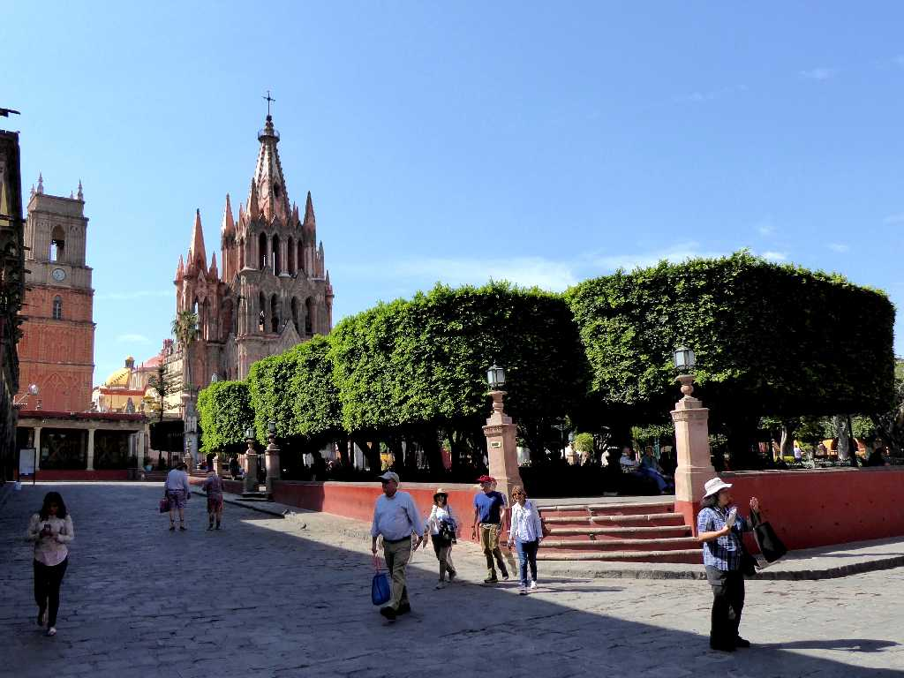
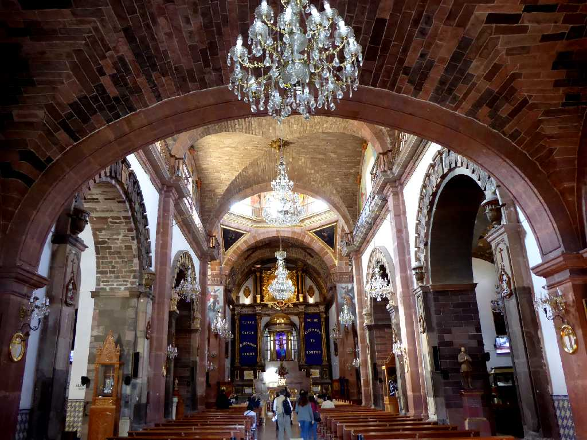
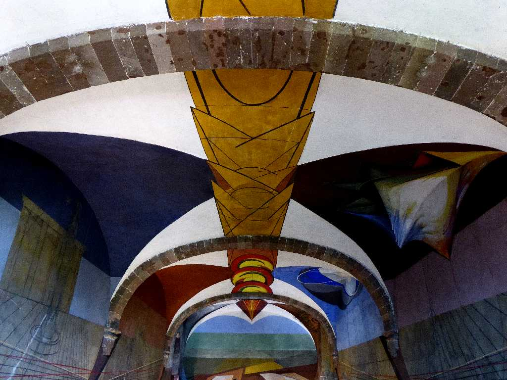
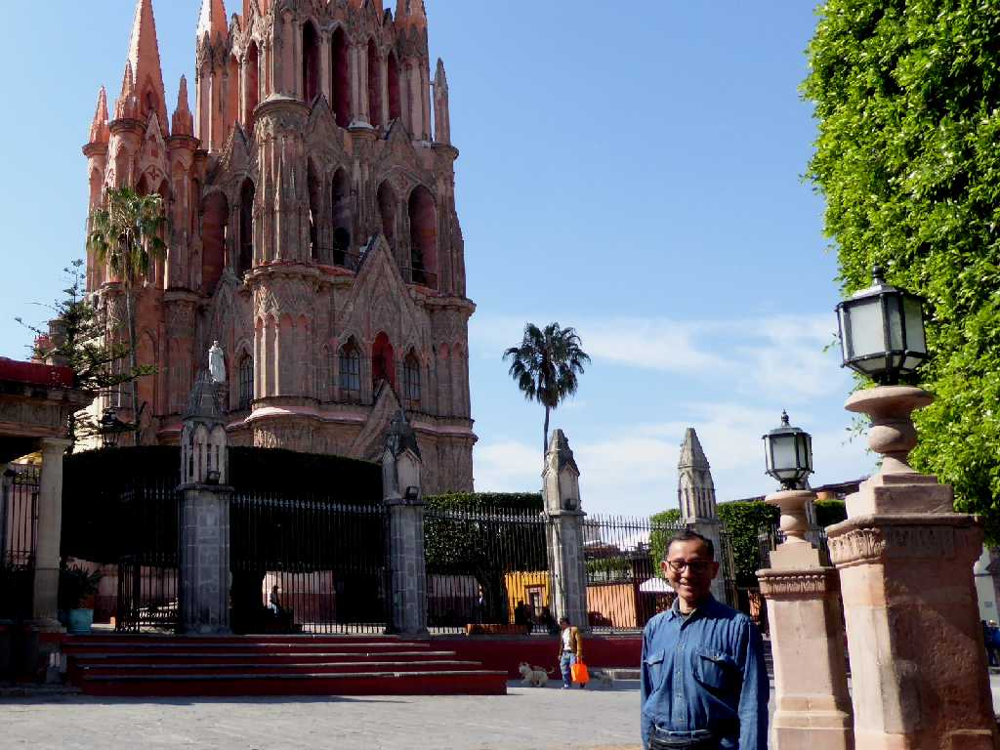

La Parroquia de San Miguel de Allende Jardín Allende San Miguel de Allende
メキシコで最も美しい街の一つサンミゲルデアジェンデ

La Parroquia de San Miguel de Allende
１９世紀末に創られたパロキア教会

Siqueiros Unfinished 1940s mural Centro Cultural de Bellas Artes San Miguel de Allende
元修道院の芸術学校にあるシケイロスが描いた１９４０年代の未完成の壁画
Mercado de Artesanías San Miguel de Allende
アルテサニアス市場の花屋さん

March 9 2020 La Parroquia de San Miguel de Allende